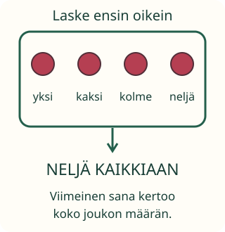

Viimeinen sana kertoo määrän

Aava kysyy: montako marjaa rasiassa on kaikkiaan?
Tavoite: kerron koko määrän viimeisen laskusanan avulla.
Aava kysyy: montako marjaa rasiassa on kaikkiaan?
Tavoite: kerron koko määrän viimeisen laskusanan avulla.
Kosketa neljää tavaraa vuorotellen ja laske oikein: yksi, kaksi, kolme, neljä. Nyt voit vastata: niitä on neljä.

Yksi oli ensimmäinen sana. Lasku jatkui sanaan neljä. Siksi koko määrä on neljä. Et tarvitse uutta laskua, jos muistat viimeisen sanan ja laskit jokaisen kerran.
Loikka laskee viisi palikkaa oikein. Kansi suljetaan. Mitään ei lisätä tai oteta pois. Kannen alla on yhä viisi palikkaa.
Mieti hetki: tarvitseeko kansi avata, jos muistat määrän?
Voit edetä itse tai käynnistää rauhallisen näytön.
Yksi, kaksi, kolme, neljä. Niitä on neljä kaikkiaan. Kannen allakin neljä.
Loikka laski jokaisen kerran: yksi, kaksi, kolme, neljä, viisi. Kansi suljettiin. Mitään ei muutettu.
Montako kannen alla on?
Valitse vastaus.
Valitse tästä joukosta kolme marjaa. Kun määrä on kolme, lopeta ja tarkista. Valinnan voi perua napauttamalla uudestaan.
Valitse Aavalle kolme.
Kuuntele aikuisen lukema lasku tai lue se itse. Mikä sana oli viimeinen? Se kertoo koko määrän.
Anna aikuiselle neljä palikkaa suuremmasta kasasta. Lopeta, kun olet laskenut neljä. Kerro, miksi lopetit.
Esitieto on M-NUM-01: viimeinen sana ilmaisee määrän vain, kun jokainen kohde laskettiin kerran ja sanat olivat oikeassa järjestyksessä. Toistuvaa laskemista saa käyttää tarkistukseen. Älä tulkitse sitä yksin ymmärtämättömyydeksi. Suoran määrävalinnan edellä ei vaadita kohdenapautuksia; antamistehtävässä valitseminen on itse tehtävä.
Ilman laitetta: laske pieni joukko ja peitä se liinalla. Mitään ei lisätä tai poisteta. Kysy määrä ja salli liinan avaaminen tueksi. Digitaalinen vastaus ei osoita pysyvää oppimista tai itsenäistä puheen tuottamista.
Lopuksi: laskit oikein ja viimeinen sana oli kuusi. Montako niitä on?